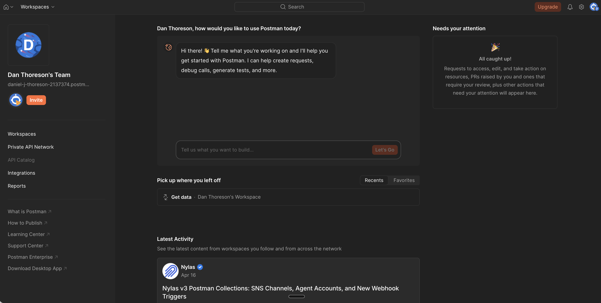

Why Developer Tools Have Terrible UX
Most developer tools have bad UX.
Are the developers who build dev tools just bad at design? No, at least not necessarily. Some of the smartest engineers in the world build these tools — but the incentives behind these tools make good UX almost impossible.
Despite the talent and brainpower behind these systems, they're often:
- confusing to navigate
- inconsistent in behavior
- difficult to learn
- frustrating to use daily
The problem
When a tool is hard to use, we often blame the user for not reading the documentation thoroughly enough, rather than blaming the interface for failing to guide them.
But cognitive load is a zero-sum game. Every ounce of mental energy spent remembering flags or parsing dense dashboards is energy not spent solving real problems.
If you've ever used modern developer tools, you've felt this. You open something expecting to do a simple task — and instead you're met with:
- unclear entry points
- competing UI elements
- multiple ways to do the same thing
- no obvious “starting path”
Take something as simple as making an API request. That's the core job. That's why you open a tool like Postman. And yet, you're greeted with:
- onboarding widgets
- AI assistants
- notifications panels
- workspace concepts
…everything except a clear “start here.”
You shouldn't have to search for the primary action.
Why this happens
This is structural, not accidental.
1. Builders are not representative users
The people building these tools are:
- power users
- deeply familiar with the system
- comfortable navigating complexity
They optimize for speed once you already understand everything, rather than clarity for someone just trying to get something done.
So the UI reflects internal mental models, not user workflows.
2. “Users will figure it out”
Developer tools get a free pass.
There's an implicit assumption that:
- users will Google it
- ask in Slack
- watch a tutorial
- or just brute-force their way through
That removes pressure to make the interface intuitive. UX becomes optional.
3. No one owns the UX
In many teams:
- designers are absent, or too removed
- engineers are making UX decisions
- no one is accountable for coherence
The result is predictable:
Developer tools end up as locally optimized features but globally inconsistent experiences.
Every feature makes sense on its own. Together, they don't.
4. Feature pressure turns tools into dumping grounds
This is the biggest one.
Every request becomes:
- a new toggle
- a new tab
- a new configuration option
- a new panel
Nothing gets removed. Nothing gets consolidated.
Over time, the interface becomes a collection of decisions, not a product.
Real-world examples
Postman — no clear starting point
You open the app to make a request.
Instead, you're dropped into:
- a conversational AI prompt
- a “needs your attention” panel
- workspace navigation
Where do you actually go to make a request?
The core action is buried under everything else.

Jenkins — debugging as archaeology
Setting up pipelines feels like a scavenger hunt.
When something fails:
- errors are buried in raw console logs
- you scroll endlessly
- you search manually for failure points
The system gives you data, but not clarity.
AWS Console — power without hierarchy
AWS is incredibly powerful. But the console feels like dozens of unrelated tools stitched together.
Problems:
- inconsistent navigation patterns
- unclear relationships between services
- naming that increases cognitive load (CloudWatch vs CloudTrail)
Even experienced engineers get lost. In fact, many eventually abandon the UI entirely in favor of CLI or Terraform.
These aren't necessarily easier, but at least they're more predictable.
Jira — work about work
Jira is supposed to help teams move faster.
Instead, it often feels like:
- filling out forms
- navigating workflows
- managing states
Developers spend time maintaining the system instead of doing the work.
Why this actually matters
It's easy to dismiss this as “just how dev tools are”
But the cost is real:
- slower development cycles
- higher onboarding time
- more mistakes
- reliance on tribal knowledge
- frustration that compounds daily
Dev tools are used constantly. Small inefficiencies compound massively over time.
What good looks like
Good developer tools don't try to expose everything.
They prioritize:
- clear primary actions — You always know where to start
- strong defaults — You don't configure everything upfront
- progressive complexity — Advanced options appear when needed
- consistent patterns — Learning once applies everywhere
- opinionated design — Not every edge case gets first-class UI
Most importantly, good tools optimize for getting something done — not for exposing every possibility.
Final Thoughts
Developer tools don't have a UX problem because developers don't care.
They have a UX problem because complexity is rewarded and no one is incentivized to say no.
Better UX doesn't come from adding designers; it comes from reducing scope, enforcing priorities, and designing for clarity over power.